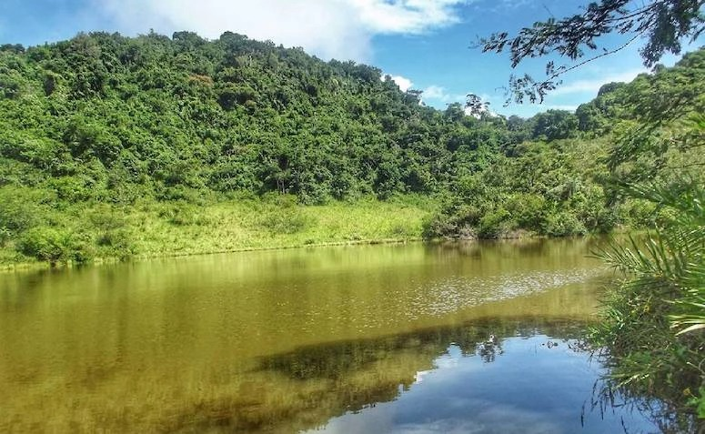

Turistismo e Atrações
Trilha da Serra do Contente
Faça um percurso de 1,5 km em meio à Mata Atlântica pela trilha da Serra do Contente. O local é perfeito para a prática de trekking moderado. É necessário pagar uma taxa para adentrar a trilha.
Cachoeira da Palmeira

Localizada no sítio homônimo, a Cachoeira da Palmeira fica a 17km do centro da cidade e possui 3 quedas d’água, bicas e piscinas naturais, e conta com restaurantes bicas, e banheiros proximos.
Alto do Cruzeiro

O Alto do Cruzeiro fica no centro de Gravatá, e abriga ainda a Capela do Cristo Rei e a estátua do Cristo Redentor. O seu acesso pode ser feito de carro ou através de uma escadaria com 365 degraus.
Centro Histórico

A Casa da Cultura, antiga cadeia pública transformada em Memorial de Gravatá em 1985, possui um rico acervo que registra a história da cidade. O Museu de Gravatá apresenta a história local e nacional. Valor de entrada: R$ 10,00.
Rapel e Trilhas

Todos os finais de semana, se organizam trilhas e atividades de rapel pela antiga via férrea e as pontes. As atividades mais comuns são a trilha de 6 km pelos trilhos abandonados, e o rapel negativo de 50m de altura, organizados por várias empresas particulares.
Serra das Cãibras

Está localizada no Sítio Valentim, a 8 km do centro da cidade. Local ideal para passeios de bicicleta, com um mirante de onde se tem a visão das cidades circunvizinhas: Cumaru, Passira, Limoeiro, João Alfredo, Serra Negra.